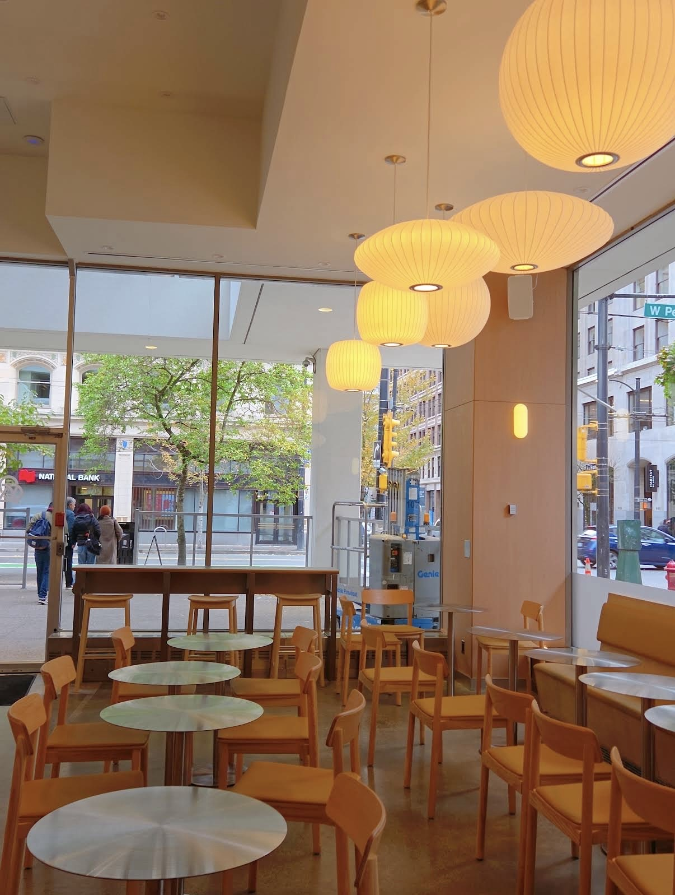

Our Story
Our grandmother whisked one bowl every morning for sixty years. We built a counter so other people could borrow the habit.
Matcha & coffee · Vancouver
A Japanese-inspired cafe serving matcha whisked to order and coffee roasted within the week.
Three things we make every day, and make properly.

Our reserve-grade matcha, whisked to order and poured over milk so the two settle in layers. Served hot or iced, unsweetened unless you ask.
Panko-crusted prawn cutlet pressed between soft milk bread, crusts off, cut clean down the middle. The thing to order if you came in hungry.
Baked hot and fast so the top scorches and the centre stays loose. Vanilla, a little salt, and nothing else getting in the way.
Pastries and drinks that rotate with the season. Choose anything to see it larger.
Our grandmother whisked one bowl every morning for sixty years. We built a counter so other people could borrow the habit.
Ninety seconds of whisking, filmed once so we can stop explaining it across the counter.
Walk in, sit down, stay as long as you like. Large groups are easier before eleven.
